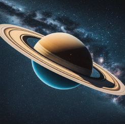
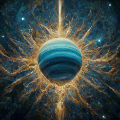

*Hover to see who has these Aquarius Placements*
Individuals with Sun in Aquarius are known for their independence and innovation.


The Moon in Aquarius signifies a unique and inventive emotional nature.


Mercury in Aquarius enhances original thinking and progressive ideas.

Individuals with Venus in Aquarius value freedom and unconventional relationships.


Mars in Aquarius indicates a strong drive for innovation and social change.

Jupiter in Aquarius promotes humanitarian efforts and forward-thinking ideas.


Saturn in Aquarius encourages responsibility towards community and innovation.

Uranus is the ruling planet of Aquarius, representing originality and rebellion.


Neptune in Aquarius fosters a sense of idealism and vision for the future.

Pluto in Aquarius signifies transformative changes in society and technology.

Those with Aquarius rising are often seen as unique and innovative by others.